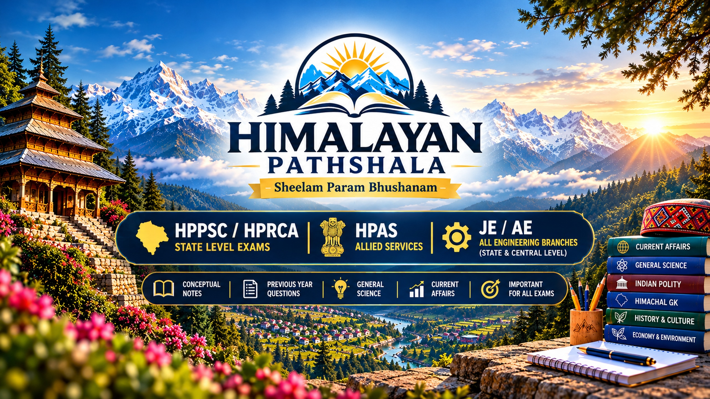

HP General Knowledge
Geography, culture, districts, rivers, economy and important state facts.
Explore resources →A focused learning space for Himachal Pradesh GK, history, geography and competitive examination preparation. Learn step by step, practise actively and revise with confidence.
Built for structured learning, regular revision and smarter practice.

Start with the subject you need most. Use these categories to organise your learning and revision.
Geography, culture, districts, rivers, economy and important state facts.
Explore resources →Historical context, hill states, people’s movements and statehood.
Explore history →Plan syllabus-based study, current-affairs review and answer practice.
Practise now →Build a revision routine and organise technical and general subjects.
Find study aids →Select an era to explore its revision focus. Use an authoritative textbook and the current exam syllabus to verify detailed dates, names and events.
Build context from evidence, geography and historical sources.
Open History Revision PDF ↗Search the study aids, filter by topic and open a PDF. These starter resources are revision frameworks, not official publications or complete exam notes.
A framework for organising eras, key events, regional history and statehood revision.
A weekly planning aid for topic learning, map practice, revision and self-testing.
A checklist for maps, physical geography, rivers, districts and exam review.
No resources match that search. Try a different keyword or topic.
Build a repeatable study routine and use short quizzes to check your understanding.
Consistency helps you identify gaps early and focus revision where it matters most.